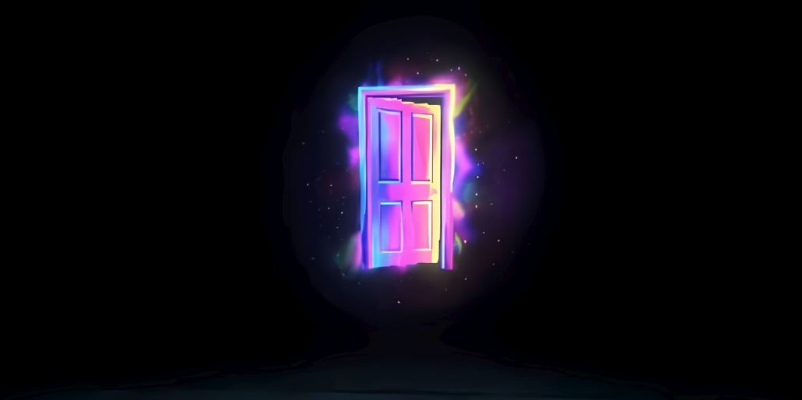
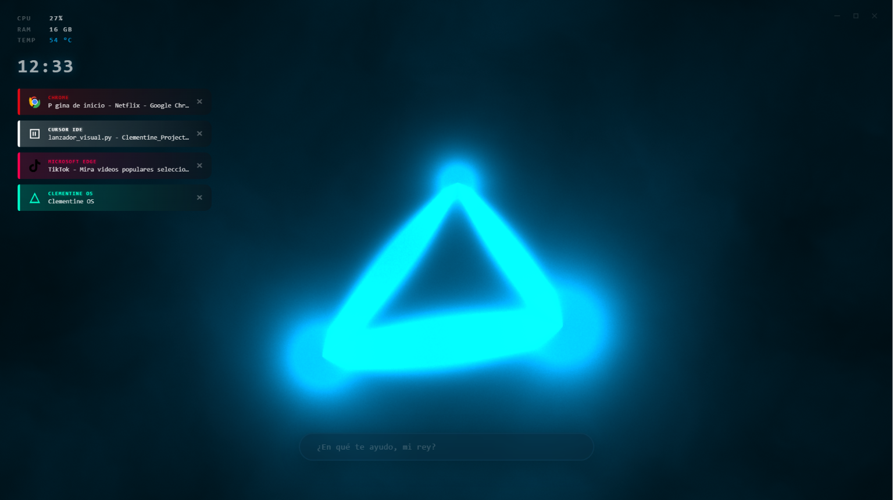
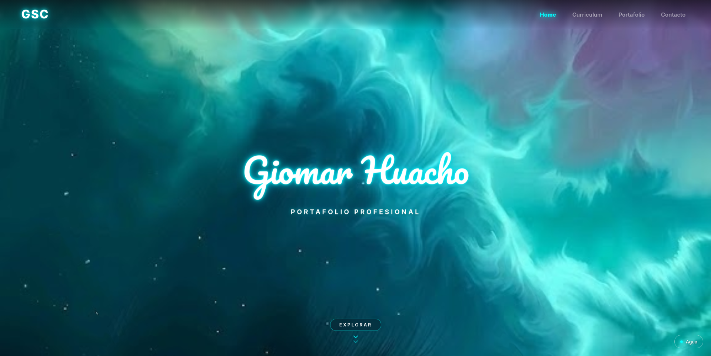

Mis Proyectos
PROYECTOS DE APRENDIZAJE PERSONALES
Desarrollo de Scripts más Interfaz Gráfica NitroSense
Scripts propios acompañados de una interfaz gráfica inspirada en NitroSense para controlar manualmente la velocidad de los ventiladores y vigilar en tiempo real las temperaturas de CPU y GPU. Cuenta con perfiles Silencio, Normal y Turbo para mantener el equipo fresco al exigirle rendimiento.

Videojuego en Desarrollo (Godot 4)
Proyecto personal de videojuego en primera persona que estoy desarrollando en el motor Godot 4. En él practico la programación de mecánicas mediante scripts, el diseño de niveles, la iluminación ambiental y el sistema de diálogos e interacción.

Clementine - Agente IA
Asistente virtual desarrollado en Python que ejecuta modelos de lenguaje en local utilizando mi propia tarjeta gráfica con Ollama, conectado a una base de datos en Supabase para recordar el contexto de las conversaciones.

Portafolio Web Personal
Diseño y desarrollo de esta página web desde cero en Visual Studio Code para mostrar mis proyectos, certificados y currículum en un entorno limpio con efectos interactivos WebGL y desplegada en GitHub Pages.